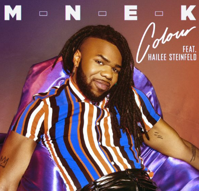

Colour - MNEK
그의 새로운 싱글 ‘Colour’은 통통튀는 흥겹고 리드미컬한
사운드가 인상적인 곡으로 시원한 엠엔이케이의 보컬과
피처링으로 참여한 헤일리 스테인펠드(Hailee Steinfeld)의
목소리가 곡을 더욱 매력적으로 장식해주고 있다.

Talk Too Much - COIN
발랄하면서도 중독적인 사운드의 대명사
밴드 'COIN'이 새 싱글로 돌아왔다!
'COIN'이 특유의 댄서블한 신나는 록 음악 가지고 돌아왔다.
Doing it - Charli xcx
새로운 걸파워로 돌아온 컬러풀한 팝 [Doing it!]
Doing It'은 '절친'이기도 한 동료 '리타 오라 (Rita Ora)'의
지원 사격으로 이뤄진 환상의 콜라보레이션을 통해
복고적이면서도 경쾌한 사운드를 선보인다.